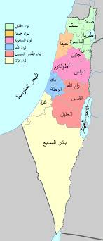
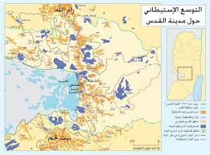
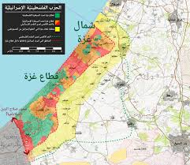

فلسطين في التاريخ الإسلامي
الأهمية الدينية
فلسطين أرض مباركة ذكرت في القرآن الكريم في عدة مواضع، وهي أرض الإسراء والمعراج حيث أسري بالنبي محمد صلى
الله عليه وسلم من المسجد الحرام إلى المسجد الأقصى. قال تعالى: سُبْحَانَ الَّذِي أَسْرَى بِعَبْدِهِ
لَيْلًا مِنَ الْمَسْجِدِ الْحَرَامِ إِلَى الْمَسْجِدِ الْأَقْصَى الَّذِي بَارَكْنَا حَوْلَهُ
(الإسراء:1).
الفتح الإسلامي لفلسطين
فتح المسلمون فلسطين في عهد الخليفة عمر بن الخطاب رضي الله عنه سنة 15 هـ / 636 م، بعد معركة اليرموك الشهيرة. وقد أعطى عمر أهلها الأمان بما عرف بالعهدة العمرية التي تضمنت حقوقهم وحرية عبادتهم.
الفتح الإسلامي
دخل الخليفة عمر بن الخطاب القدس وسلمه البطريرك صفرونيوس مفاتيح المدينة بعد حصار قصير.
الاحتلال الصليبي
سقطت القدس بيد الصليبيين بعد مجزرة راح ضحيتها عشرات الآلاف من المسلمين واليهود.
تحرير صلاح الدين
استعاد صلاح الدين الأيوبي القدس بعد انتصاره في معركة حطين، وعامل السكان معاملة إنسانية.
العهد العثماني
دخلت فلسطين تحت حكم الدولة العثمانية واستمرت كذلك لأربعة قرون.
خريطة فلسطين التاريخية
خريطة توضح حدود فلسطين التاريخية قبل الاحتلال البريطاني والصهيوني
جرائم الاحتلال الصهيوني
منذ النكبة عام 1948، ارتكب الكيان الصهيوني آلاف الجرائم بحق الشعب الفلسطيني، من التطهير العرقي إلى المجازر الجماعية والتدمير المنظم.
أبرز المجازر
مجزرة دير ياسين
قتل فيها أكثر من 107 فلسطينيين بينهم نساء وأطفال وشيوخ على يد عصابات الإرغون وشتيرن.

مجزرة صبرا وشاتيلا
مجزرة استمرت 3 أيام راح ضحيتها ما بين 700 إلى 3500 فلسطيني بمساعدة الجيش الإسرائيلي.
مجزرة مستشفى المعمداني
قصف إسرائيلي لمستشفى المعمداني في غزة أدى إلى مقتل أكثر من 500 مدني بينهم أطفال ومرضى.
إحصاءات صادمة
| نوع الجريمة | العدد | الفترة | المصدر |
|---|---|---|---|
| عدد الشهداء منذ 1948 | أكثر من 35,000 | 1948-2023 | وزارة الصحة الفلسطينية |
| اللاجئون الفلسطينيون | 7.2 مليون | 2023 | الأونروا |
| المعتقلون منذ 1967 | أكثر من مليون | 1967-2023 | نادي الأسير |
| المستوطنات غير القانونية | 280 مستوطنة | 2023 | الأمم المتحدة |
| المباني المدمرة في غزة 2023 | أكثر من 50,000 | أكتوبر-نوفمبر 2023 | هيئة الاستعلام الفلسطينية |
خريطة التوسع الاستيطاني
خريطة توضح التوسع الاستيطاني الصهيوني في الضفة الغربية منذ 1967 حتى اليوم
معركة طوفان الأقصى
في 7 أكتوبر 2023، شنت كتائب القسام والكتائب الفلسطينية عملية "طوفان الأقصى" رداً على انتهاكات الاحتلال للمسجد الأقصى، والتي شكلت نقطة تحول في تاريخ المقاومة الفلسطينية.
أحداث اليوم الأول
إطلاق أكثر من 5000 صاروخ من غزة تجاه المستوطنات المحيطة وغلاف غزة.
اقتحام مقاتلون فلسطينيون لحواجز الاحتلال وتحرير معبر إيرز.
تحرير عشرات الأسرى الفلسطينيين من سجون الاحتلال داخل غلاف غزة.
إعلان حالة الطوارئ في الكيان الصهيوني واستدعاء الاحتياط.
إنجازات المقاومة
- تدمير عشرات الدبابات والمدرعات الإسرائيلية.
- قتل وإصابة المئات من جنود الاحتلال.
- أسر عشرات الجنود الإسرائيليين.
- إرباك الجيش الإسرائيلي لمدة أيام.
- إعادة القضية الفلسطينية إلى الواجهة العالمية.
خريطة عمليات طوفان الأقصى
خريطة توضح نقاط الاشتباك والعمليات في اليوم الأول من معركة طوفان الأقصى
المقاومة والأمل
على الرغم من كل الجرائم والاحتلال، يبقى الشعب الفلسطيني صامدًا ومقاومًا، جيلاً بعد جيل، مؤمنًا بحتمية النصر.
أشكال المقاومة
المقاومة المسلحة
كتائب القسام، سرايا القدس، وغيرها من الفصائل التي تقاوم الاحتلال.
مقاومة الأطفال
أطفال الحجارة الذين يواجهون الدبابات بالحجارة في انتفاضات متتالية.
المقاومة الثقافية
الحفاظ على التراث الفلسطيني والهوية رغم محاولات الطمس.
رسالة دعم للمقاومة
اكتب رأيك في البحث:
`